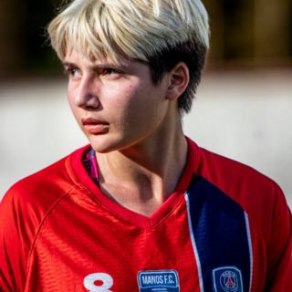
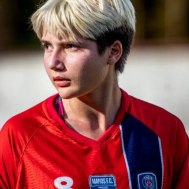

Duda e o Futebol
Conheça a Duda que tinha um sonho em ser jogadora de futebol e hoje viaja o mundo para realizar seu sonho.
Conheça a Duda que tinha um sonho em ser jogadora de futebol e hoje viaja o mundo para realizar seu sonho.

Por Redação Bem Esportivo
📍 Freguesia do Ó, São Paulo | 📅 Data do treino: 09 de junho

Na última semana, a bola rolou com intensidade na Academia de Futebol Portela, localizada na tradicional Freguesia do Ó, zona norte de São Paulo. Sob o comando do experiente professor Bruno, um treino físico, técnico e tático movimentou o campo e revelou a dedicação de jovens talentos em formação.
Os grandes protagonistas foram os alunos João Pedro, de apenas 9 anos, e Lorenzo, de 10 anos, que demonstraram disciplina, garra e muita habilidade com a bola nos pés.
O trabalho começou com um circuito físico para desenvolver resistência e agilidade, seguido por exercícios técnicos voltados ao domínio de bola, finalização e passe em movimento. João Pedro impressionou pelo controle refinado e pela leitura de jogo apurada, enquanto Lorenzo mostrou potência nos chutes e espírito de liderança em campo.


A atividade contou ainda com a participação especial do jovem goleiro Enzo, que foi testado em diversos cenários defensivos durante o treino tático. Sua performance foi essencial para simular situações de jogo reais, ajudando os colegas a se prepararem melhor para partidas futuras.
Com muito futebol nos pés e sede de evolução, os pequenos atletas representam a nova geração de craques. Tanto João Pedro quanto Lorenzo seguem encantando os que acompanham seus passos no campo, deixando claro que o futuro do futebol começa nas categorias de base — com dedicação, apoio familiar e professores comprometidos, como o professor Bruno.
🎯 Bem Esportivo segue acompanhando os bastidores do futebol de base com exclusividade. Continue com a gente para mais histórias inspiradoras como essa.